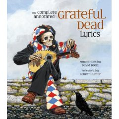
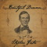
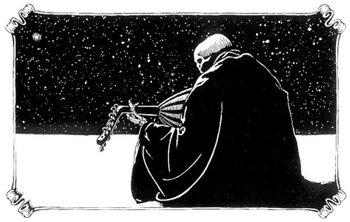

"Executed with precision and humor..."


Announcing
The Complete Annotated Grateful Dead Lyrics
Annotations by David Dodd
Foreword by Robert Hunter
Afterword by John Barlow
Illustrated by Jim Carpenter
Edited by Alan Trist and David Dodd
Published by Free Press
hardcover ISBN: 0743277473
paperback ISBN: 074327749X
512 pages
hardcover price: $35
paperback price: $18
Upcoming events, appearances, and news | Blurbs | Reviews | Articles and feature stories | Other titles
Upcoming Events and News
- Note new date! Tuesday, July 17, 2007, 7 pm. Capitola Book Cafe, Capitola.
- I appeared on Stu Levitan's radio program on The Mic, in Madison, Wisconsin, yesterday. You can (or should be soon able to) listen to it online at the station's website
- Slowly but surely clambering back up the amazon charts. Position as of
- 5/21/07: #17,205
- 5/22/07: #16,547

Download an iTunes iMix (sorry, not free...) of 20 songs cited as sources in the annotations!
Blurbs
- "This book is SO BEAUTIFUL AND WISE!"--Steve Silberman, co-author of Skeleton Key, A Dictionary for Deadheads.
- "The book is really a beauty."--Richard Powers
- "Sweet sweet book."--Carolyn Garcia (Mountain Girl)
- "If you love songs and their stories and the artists who write them and play them, this is it! This book is for and about high spirits."--Michael McClure
- "This book is great. Now I'll never have to explain myself."--Bob Weir
- "The words of our songs always gave the heart a good place to land. Many a tough night was made easy by the songs and how they related perfectly right in time to sooth the spirit of whatever was going on. Like old friends, they comforted you." --Bill Kreutzmann
- "Through all the years of playing and singing these songs, I could always find illuminating insights on the ‘Annotated’ website. Now, to all who hunger for knowledge, those nuggets of accumulated wisdom are available in this eagerly awaited new book." --Phil Lesh
- "In this book are insights to the songs we have lived with and loved all of these years. This is really a treat for me." --Mickey Hart

Reviews
- From Dirty Linen, February/March 2006 issue, review by Michael Parrish (p. 88):
[The] annotations are erudite and entertaining, and the book is generously iilustrated by a diverse set of whimsical and charming black-and-white drawings by Oregon artist Jim Carpenter.
- From msnbc.com's Oct. 3rd "Altercation" column by Eric Alterman:
Dead roundup: ... Believe it or not, what I’m most excited about is the publication of the beautiful, and amazingly comprehensive, Complete Annotated Grateful Dead Lyrics. According to PW, in 1994, David Dodd, who edited The Grateful Dead Reader, founded the first Web site of annotated Dead lyrics, and this book is the product of that project, which united academics and fans in finding "new references, resonances, and refractions" of not only Dead authored songs, but Dead-identified material as well. It’s 512 pages and published by Free Press, and if you’ve read this far, believe me, you’ll love it.
- From Library Journal:
Ten years ago, Dodd, a librarian at the San Rafael Public Library, began compiling Grateful Dead lyrics on a web site; now he has translated that work into this painstakingly annotated and illustrated compendium. The volume begins with a fascinating foreword by head Dead lyricist Robert Hunter, who describes the precarious and somewhat mystical craft of songwriting as well as his journey with the premiere jam band of psychedelia. Dodd and Trist then present the complete lyrics for nearly 200 Dead-penned songs in chronological order, inserting detailed explanations of the specific places, names, phrases, and terms mentioned. Dodd elucidates such previously obscure references as mojo hand, the Marsh King, chuba-chuba,the Ables and the Bakers,ramblin’ rose,and Muskrat Flats.He also cites the dates of the first performance and studio recording of each song and sometimes even the date and location of where a song was written. Executed with precision and humor, this will be another watershed artifact for the legion Deadheads who crave new information on their heroes. There are no doubt many such fans in public libraries, so order up.--Dave Szatmary, Univ. of Washington, Seattle
- From Publishers Weekly
Even the most hardcore Deadheads will be impressed by this obsessively complete look at the Grateful Dead's lyrics written by Robert Hunter and John Barlow, as well as selected traditional and cover songs that were basic parts of the Dead's repertoire. In 1994, Dodd (The Grateful Dead Reader) founded the first Web site of annotated Dead lyrics, and this book is the product of that project, which united academics and fans in finding "new references, resonances, and refractions" in favorites like "Dark Star" and "Uncle John's Band." The annotations range from a look at the influence of "Swing Low, Sweet Chariot," Stephen Foster's "Oh Susanna," and Chaucer's Troilus and Criseyde on Hunter's "New Speedway Boogie" to a recipe for cream puffs by Denver Post food critic John Kessler to illustrate "Cream Puff War," an obscure tune by Jerry Garcia. But the heart of the book is Hunter's exquisitely written foreword, which is equal parts love letter to the lyric tradition, impassioned argument on the importance of songwriting and creativity, and reverie for the Grateful Dead themselves and his luck in being their primary lyricist: "I lived lyric year in and year out for decades and never lost my taste for it."
- From Booklist:
The Grateful Dead, that legendary band born of the counterculture of the 1960s, possessed such an extensive catalog of original songs that it would take an academic 10 years to annotate them all. Enter David Dodd, Dead fan and cataloger at a major university. In 1994, Dodd needed a research project and hit upon the idea of annotating all the lyrics of his favorite band. He spent untold hours tracing possible allusions in the Dead's songs and posting them on his website. The end result is this comprehensive book that presents possible sources for lyrics without ever offering definitive interpretations. The songs are arranged chronologically by date of first performance and span from 1965 to 1995. For Deadheads, the work is mesmerizing, as many of the band's once enigmatic lyrics are now illuminated, if not completely. As one of the band's chief lyricists, John Barlow, says in the afterword, "We always tried...to give you plenty of room to flesh your own song around the bones of what we gave you." -- Jerry Eberle
Other articles and feature stories
- "Bookin', Like the Doodah Man." Review in the Louisville Music Magazine by Martin Z. Kasdan, Jr. (Scroll down a ways to see the review within his column, "Jazzin'").
- "If My Words Did Glow," by Chad Berndston. Glide Magazine.com, January 11, 2006.
- December 16-31: Featured guest on the WELL's Inkwell.vue conference. Stop by and ask a question! The conversation continues...
- "Songs of Our Own: A Conversation with David Dodd, Author of the Complete Annotated Grateful Dead Lyrics" by Benjy Eisen on Jambands.com. December 13.
- "Academic Unravels the Origin of the Grateful Dead's Lyrics", by John Rogers (AP). Dec. 7. The following papers have run this story: The Massachusetts Daily Collegian, Wilkes Barre Times-Leader, Gainesville Sun, Grand Forks Herald, Tuscaloosa News, Columbus (Georgia) Ledger-Enquirer, Macon Telegraph, Monterey County Herald, San Luis Obispo Tribune, Centre (Pennsylvania) Daily Times, Contra Costa Times, Bradenton Herald, The Olympian (Washington State), The Press-Enterprise (Southern California), the Hindustan Times, The Indianapolis Star, The Salt Lake Tribune, The Sound Bend Tribune, The Fort Wayne Journal-Gazette, The Brandon Sun, The Brooks Bulletin, The Washington Times, The Washington Post, CBS5, The Pioneer Press (Minnesota), and others....I had to stop keeping track.
- "Hitting the High Notes," by Ian McGillis. Review. The Gazette (Montreal). Dec. 3. ("It would be a shame if only hardcore Deadheads picked up on The Complete Annotated Grateful Dead Lyrics, with annotations by David Dodd and illustrations by Jim Carpenter. The Dead's reputation as a jam band has sometimes obscured the fact that in Robert Hunter,
they had a lyricist of rare range and poetic sensibility. Deadheads don't fool around when it comes to the documentation and archiving of their heroes, and this book, which has grown out of a fan site, is a monument to their dedication.")
- "Music Books Offer Backstory to CDs," by Pamela Klaffke. Review. The Calgary Herald. Dec. 3. ("David Dodd takes readers beyond the lyrics with his exhaustive
research in a book that's easy to read and will almost certainly give Grateful
Dead fans everywhere a whole lot to talk about.")
- "Closet Deadhead" podcast of an interview with me by Greg Cotterill. November 21.
- Marquee Magazine review by Brian Johnson. November, 2005.
- Billboard magazine article: "Grateful Dead lyricist Hunter shares his philosophy," by Jim Bessman. November 19, 2005. Also run by the following: Leading The Charge (Australia), Metro Toronto, ABC News, Herald News Daily (North Dakota).
- eWorcester.com article: "Studying the Words of the Dead: David Dodd Delves Into Rock's Most Interesting Lyrics," by Scott McLennan. Nov. 6.
- KPFA's "Dead to the World" show with David Gans, November 2, 2005, is available as archived streaming audio.
- KyndMusic article, by Dave Terpeny.
- The Book Standard. "The Dead Live On the Music Chart," by Patrick J. Eves. The book has been on the "Music Books" chart at The Book Standard since its debut. As of February 6, it stands at number 6, with 17 weeks on the charts. Yay!
- ascap.com: Audio story, "Playback."
- Music Box article, October 25: "Dissecting the Dead with David Dodd," by John Metzger.
- Relix, November issue. "Smoke. Stacks. Lightning. A Librarian Catalogues the Dead." by Jesse Jarnow. p. 70. Very good article--Jesse gets everything right!
- Rolling Stone's October 20 issue includes the book at #4 in its "The Grid: Our Current Obsessions" list on page 37, just ahead of Malin Akerman, #5, and just behind something called the MobiBLU Cube MP3 player.
- Article in the Oregonian, on Friday, Oct. 14, by Jeff Baker.
- Eugene Weekly article by Lois Wadsworth, October 14,
- Nice article in the Eugene Register Guard on Sunday, October 9.
- The Marin Independent Journal: September 29. Feature article by Paul Liberatore, "The Book of the Dead." Not available online.
- Library Journal's online interview with me about the book, August 30.
Other titles
Revised May 22, 2007